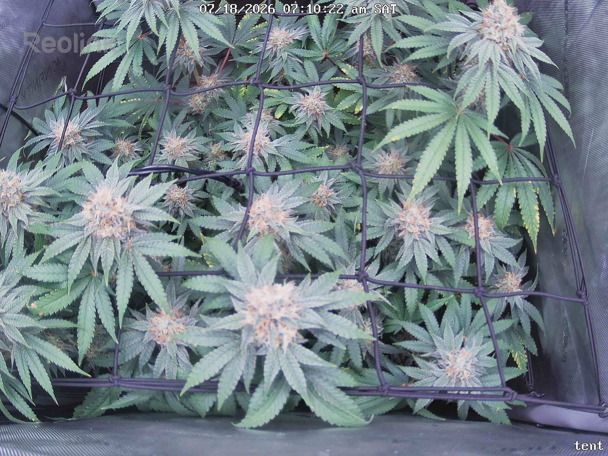
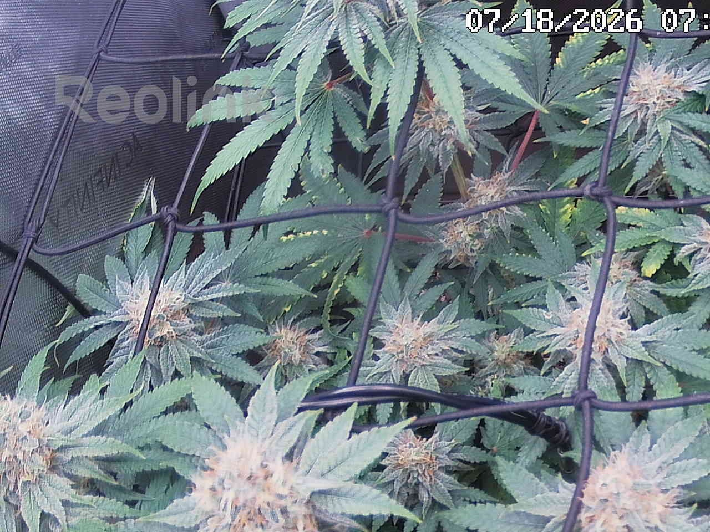
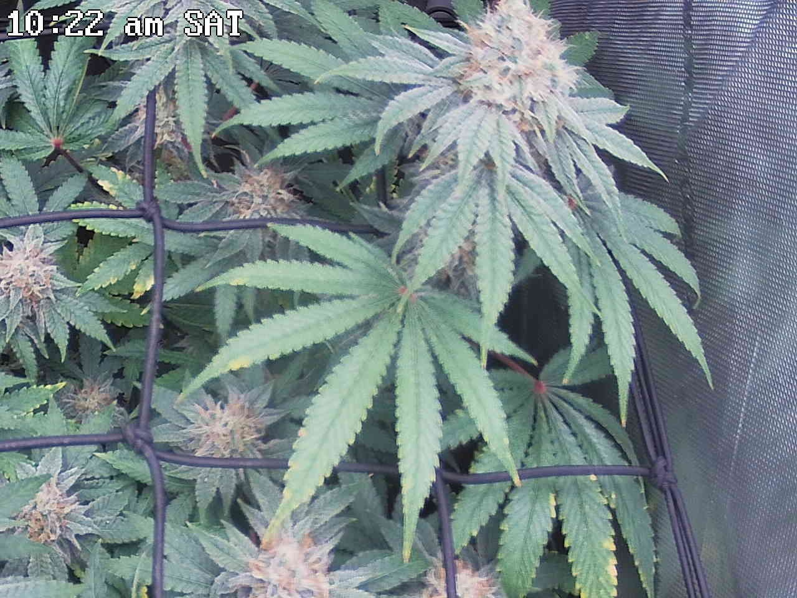
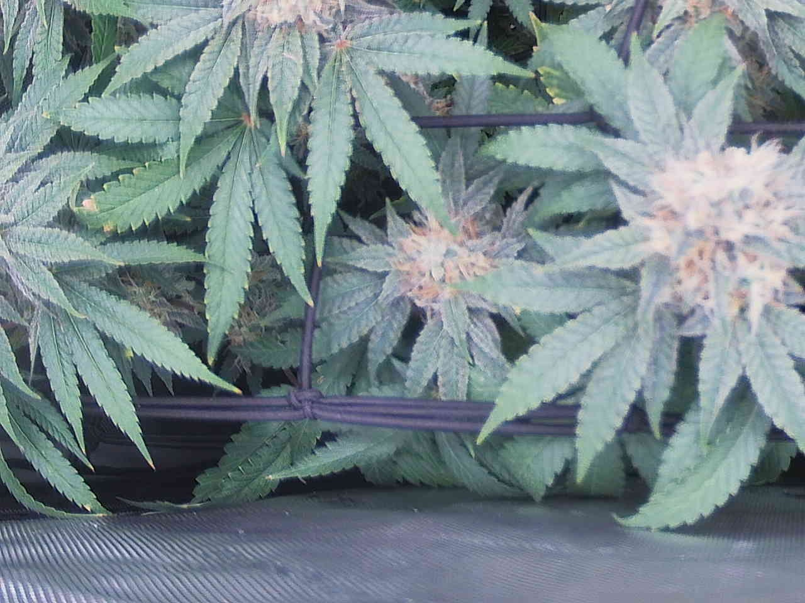
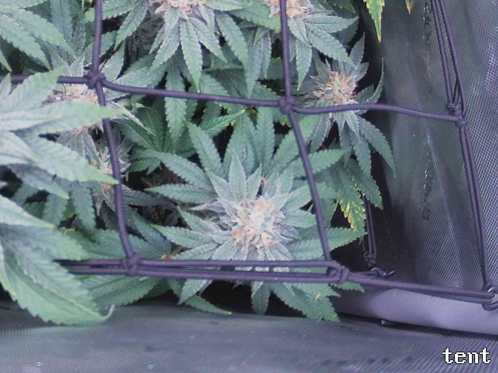
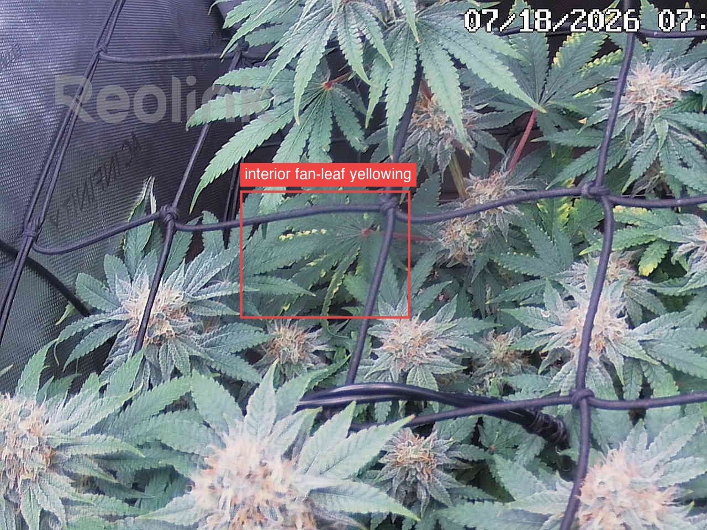
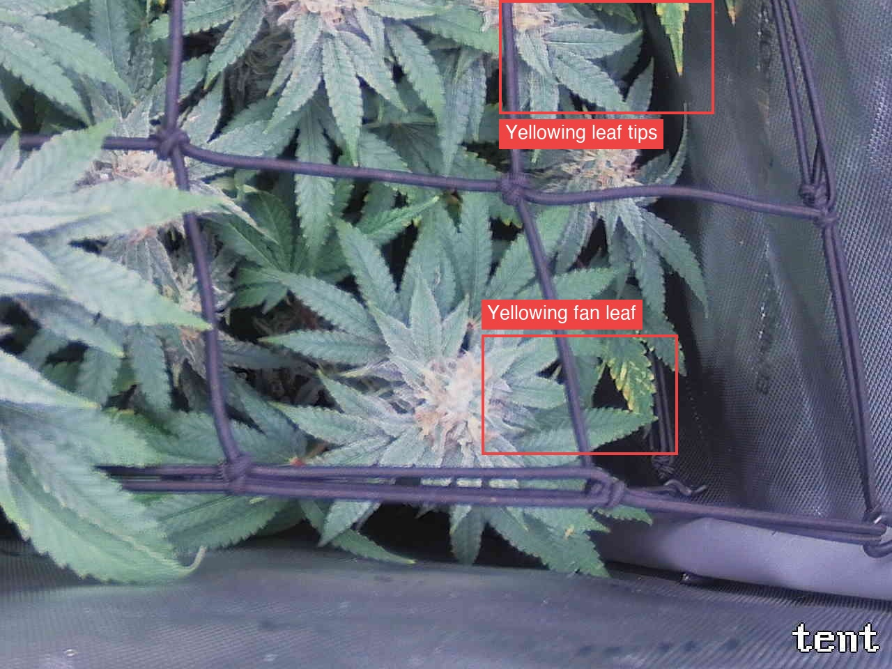

Per-quadrant analysis — the canopy shot was split into a 2x2 grid and each region compared against the previous day.
The plant is healthy and on-track for ~day 45 flower: all four quadrants show fattening, frostier colas with an advancing white→amber/cream pistil ratio, deep-green tops and turgid, non-drooping foliage, and no pest, powdery mildew, or botrytis signatures at this resolution. The day-over-day trend is positive on bud development, with the only negative being interior/lower fan-leaf yellowing — flagged ATTENTION in the top-left (mid-tile serrated lime/yellow fan leaf plus right-margin tips) and bottom-right (a near-whole-leaf yellow at the right net junction, more distinctly yellow than the prior frame, plus upper-right tip yellowing). This is the previously logged interior-fan watch item and is most consistent with normal late-flower senescence, but a concurrent mobile-nutrient draw (K or N) cannot be excluded from photos, and the bottom-right leaf's apparent one-day progression is the reason it warrants attention rather than dismissal. Most important action: confirm the cause rather than assume senescence — check runoff/feed EC and the K:N balance and inspect those interior leaves in person for serration-margin (K) versus uniform (N/senescence) patterning, since the yellowing is stable-to-slightly-advancing across two of four quadrants and only genuine senescence should be left to run.
Bud sites (whole plant, estimate): 17-27

Bud sites: 7-10
knowledge_base/02-deficiencies* (senescence vs mobile-nutrient yellowing on older leaves) and the change-log entries; I did not re-open the KB file this run, so treat the K possibility as unconfirmed here.Bud sites: 4-7
knowledge_base/02-deficiencies covers this pattern; not opened this run, so I state it only as a possibility, not a conclusion).Bud sites: 3-5
